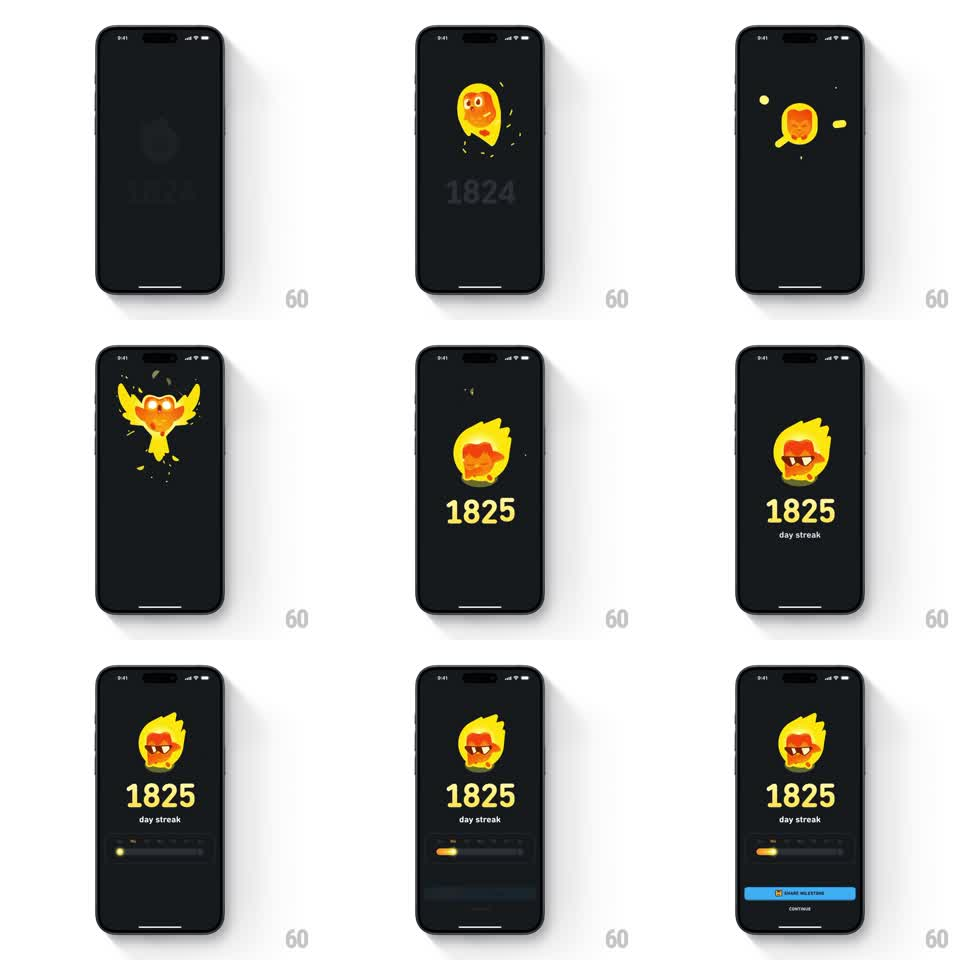

Media
Frame-by-frame

Rebuild this animation 1:1: Duolingo's 1825-day streak celebration - the fire mascot smolders, explodes into a phoenix burst, reignites wearing sunglasses, and the counter rolls to 1825 with a milestone share bar.

Rebuild this animation 1:1: Duolingo's 1825-day streak celebration - the fire mascot smolders, explodes into a phoenix burst, reignites wearing sunglasses, and the counter rolls to 1825 with a milestone share bar. ## Integration Integration: stack-agnostic spec - springs given as stiffness/damping, timed motions as duration + curve; map every value to your framework and animation library of choice. ## Scene A near-black screen. The Duolingo streak flame mascot at center, a big counter below it (1824, then 1825), "day streak" beneath that, and finally a share milestone bar and Continue button at the bottom. ## Motion spec Pattern: multi-stage celebration burst, ~4s. - The flame pulses and flickers in place (scale 1 to 1.08, 400ms loop, twice) over the counter reading 1824. - The mascot erupts: it bursts upward into a phoenix-like spread of wings and embers (500ms, ease-out), particles scattering and fading (staggered 300-700ms). - The embers rain back down and the flame re-forms (400ms), now wearing sunglasses, with a small settle bounce (spring stiffness 380 damping 15). - The counter rolls from 1824 to 1825 (digit flip, 300ms) and "day streak" fades in beneath. - The share bar and Continue button slide up and fade in (300ms). ## Calibration - The explosion is the centerpiece: fast out, sparkly, then a clean re-form - no lingering smoke. - The sunglasses land with the re-form, not after - the mascot's new look is part of the reassembly. ## Reduced motion Mascot flashes, counter updates, bar appears. ## Don't miss - Embers are individual particles with their own arcs, not a single puff sprite. - The final frame holds the sunglasses flame over the big 1825 - the trophy shot.